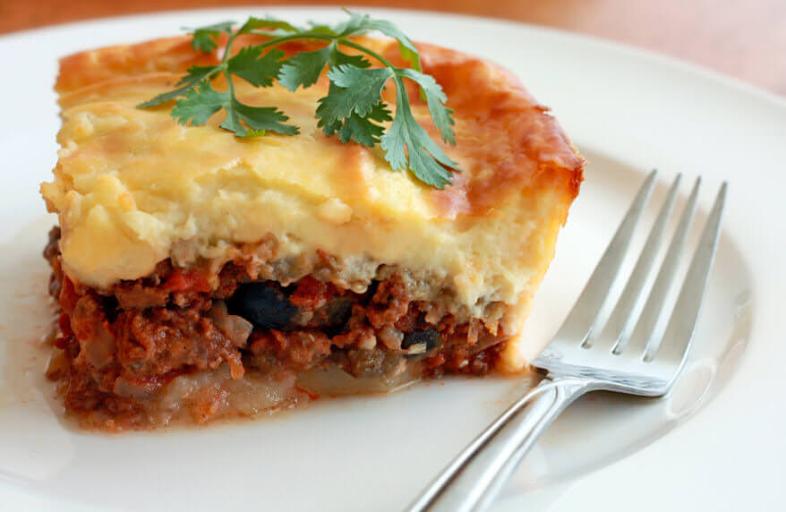
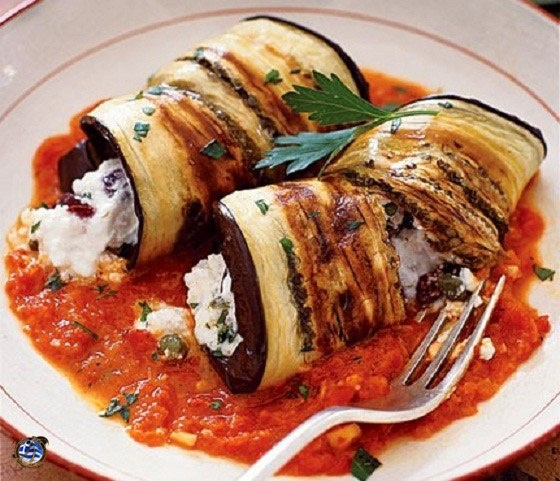
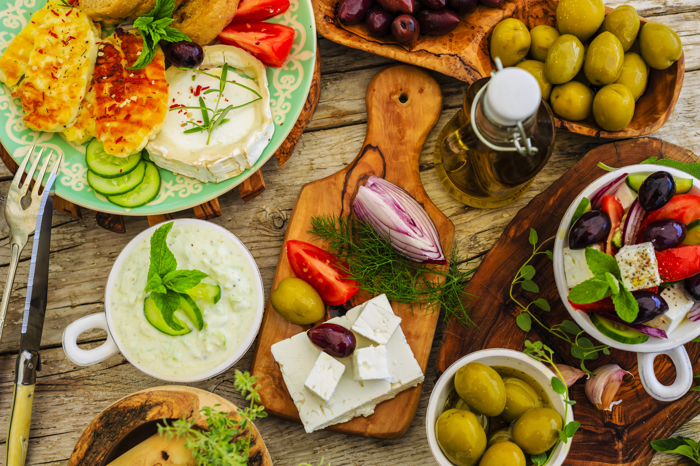

| Home | Cuisine | Recipe | Ingredients | About |
Greek cuisine widely uses vegetables, olive oil, grains, fish, wine, and meat. Additionally, the wide use of yoghurt and cheeses make dairy an important part of any greek diet. Greek food has an extremely long history, and its flavors change with the season. Originally, much of the Greek meat came from fish, but this has changed recently due to new technologies.
|  |  |
 |  |

|

|
Additional Information Common Ingredients Milk, Olives, cheese, rosemary, coriander, basil, Filo pastry, lemons, yogurt, vinegar Techniques Stoforno, Tiganita, Psito, Vrasto Dishes Moussaka, Souvlaki, Fasolada, Tzatziki, Gyro Climate Mediterannean |